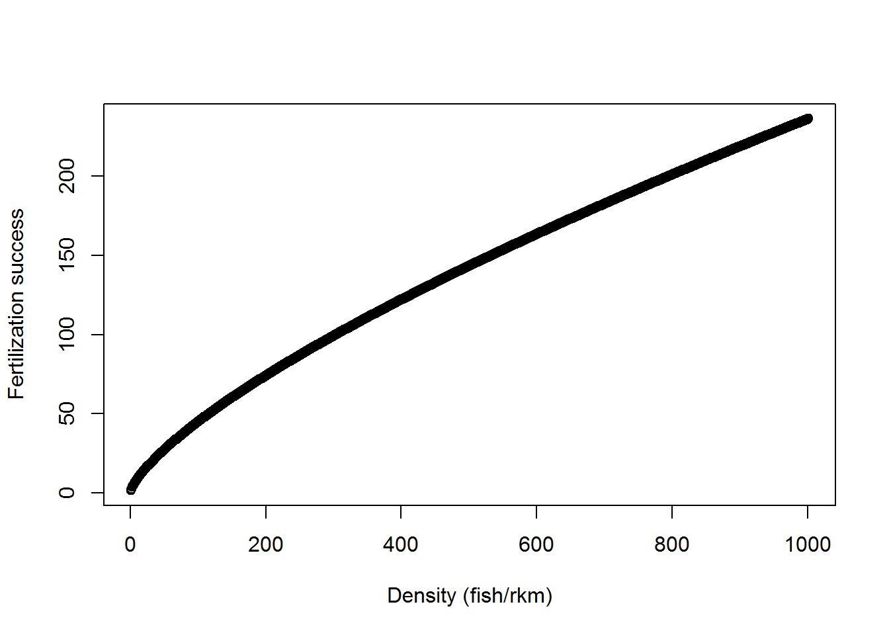

Chapter 1 Y_{I,j,t+1}=_0 + 1 Q{I,j,t}$ for i<=j i>j = 0
Current model implementation requires an array of transitions for each timestep. Future model versions will attempt to reefing the linke between environmental covariates like flow such that a time series of predicted flows can be used as as inputs. The relationship between movement and varying covariates may take the form of a model prediction given previous location. For example, movement in terms of kilometers could be modeled
\(rkm_{t+1} = \beta_0 + \beta_1 \cdot Q + \beta_2 \cdot rkm_t + \beta_3 \cdot Q \cdot rkm_t + \sigma\).
The equation predicts how far, on average, a pallid sturgeon will move given an effect of flow and current location. The interaction term accounts for the effect of location (i.e., fish cannot move as far if they are near the uppermost bends).
1.1 Effects on survival
Modeling the effect of management actions on survival is specified by a logistic equation. Specifically, the base survivals are simulated using the equation
\(\Phi_{stage} = \frac{exp(\beta_0)}{1+exp(\beta_0)}\),
Where \(\beta_0\) represents the expected survival on logit scale. For example, adult survival is expected
1.2 Allee effect
A FUNCTION THAT PRODUCES AN ALLEE EFFECT MODIFYING GAMETE FERTILIZATAION SUCCESS
B0=0.49
B1=0.72
D<- seq(0:1000)
y<- B1*log(D)+B0
y<- exp(y)
plot(D,y,ylab="Fertilization success",
xlab="Density (fish/rkm)")